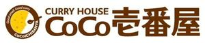

Trade Mark Journal No.2025/044 31 October 2025
WO0000001880282 (8,16,18,21,25)
Office of origin: Japan
Date of International Registration:21 August 2025
Date of designation in the UK:
21 August 2025

The mark contains the colours brown, yellow and white.
The color brown appears on an outer ring containing the words "Good smell.", "Good curry" and "CoCoICHIBANYA" in white lettering; the color brown also appears on the lettering of the words CURRY HOUSE, CoCo, and the Japanese characters; the color yellow and white appear within the inner portion of the ring; the color white is also used for the lettering of the words on the outer ring.
International priority date claimed: 29 July 2025
(Japan)
- Class 8
- Scissors; table knives; knives [hand tools]; blades [hand tools]; nail clippers; hand tools, hand-operated; bit drivers for hand tools; screwdrivers, non-electric; non-electric egg slicers; non-electric planes for flaking dried bonito blocks (katsuo-bushi planes); can openers, non-electric; spoons being tableware; table cutlery [knives, forks and spoons]; cheese slicers, non-electric; pizza cutters, non-electric; table forks.
- Class 16
- Industrial packaging containers of paper; bags of paper for packaging; envelopes of paper for packaging; pouches of paper for packaging; paper packaging and containers for food and beverages comprised of materials designed to lessen adverse effects on the environment; bags of plastics for packaging; envelopes of plastics for packaging; pouches of plastics for packaging; food wrapping plastic film for household use; hygienic hand towels of paper; paper towels; paper washcloths; paper serviettes; table napkins of paper; paper handtowels; paper handkerchiefs; paper and cardboard; stationery; seals [stationery]; stickers [stationery]; pens; pencil cases; paper notebooks; printed notebooks; erasers; writing instruments; photo albums; memo pads; office stationery; paper stationery; terrestrial globes; stands for pen and pencil; leather book covers; masking tapes for stationery use; adhesive tapes for stationery purposes; paperweights; office binders; stationery folders; plastic file folders; printed matter; printed posters; printed calendars; printed menus; printed recipe books.
- Class 18
- Clothing for pets; shoes for pets; collars for pets; tote bags; bags; handbags; shoulder bags; rucksacks; pouches; canvas shopping bags; mesh bags for shopping; textile shopping bags; change purses; key cases; wallets; card wallets; unfitted vanity cases; vanity cases sold empty; vanity cases, not fitted.
- Class 21
- Cosmetic utensils; kitchen containers; mugs; dishes; plates; drinking vessels; lunch boxes; thermal insulated soup jars; thermal insulated food jars; thermal insulated containers for food or beverages; insulated jars; insulating jars; thermal insulated bags for food or beverages; trays for domestic purposes; pot cleaning brushes; cleaning brushes for carving boards; buckets; pails; cleaning brushes for household use; rinsing buckets; rinsing pails; scrubbing brushes; kitchen sponges; waste baskets; dusting cloths; cleaning tools and washing utensils.
- Class 25
- Clothing; shirts; tee-shirts; pants; skirts; socks; aprons [clothing]; gloves as clothing; bandanas; mufflers as neck scarves; ear muffs; headwear; hats; caps being headwear; cap visors; cap peaks; sun visors being headwear; blousons; sweatshirts; sweatpants; parkas; raincoats; garters; sock suspenders; braces for clothing; suspenders for clothing; waistbands; belts for clothing; footwear not for sports; sneakers; casual shoes; rain boots; winter boots; leather shoes; insoles; beach footwear; sandals; slippers.
ICHIBANYA CO., LTD.
Representative: ONDA Makoto, 12-1, Omiya-cho 2-chome,, Gifu-shi, Gifu-ken 500-8731, JAPAN